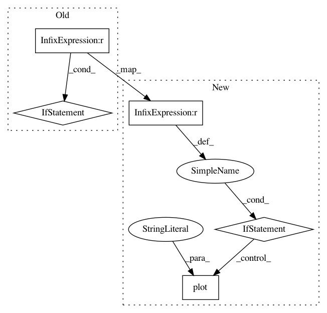

306b504c28166ea0e2e8ee3a7b8cd11d2745b34a,trunk/SUAVE/Plots/Mission_Plots.py,,plot_drag_components,#Any#Any#Any#Any#,346
Before Change
axes.plot( time , cdc , "go-", label="CD compressibility" )
axes.plot( time , cdm , "yo-", label="CD miscellaneous" )
axes.plot( time , cd , "ro-", label="CD total" )
if i == 0:
axes.legend(loc="upper center")
axes.set_xlabel("Time (min)",axis_font)
axes.set_ylabel("CD",axis_font)
axes.grid(True)
After Change
cdm = drag_breakdown.miscellaneous.total[:,0]
cd = drag_breakdown.total[:,0]
if i == 0:
axes.plot( time , cdp , "ko-", label="CD parasite" )
axes.plot( time , cdi , line_color, label="CD induced" )
axes.plot( time , cdc , "go-", label="CD compressibility" )
axes.plot( time , cdm , "yo-", label="CD miscellaneous" )
axes.plot( time , cd , "ro-", label="CD total" )
axes.legend(loc="upper center")
else:
axes.plot( time , cdp , "ko-")
axes.plot( time , cdi , line_color)
axes.plot( time , cdc , "go-")
axes.plot( time , cdm , "yo-")
axes.plot( time , cd , "ro-")
axes.set_xlabel("Time (min)",axis_font)
axes.set_ylabel("CD",axis_font)
axes.grid(True)
In pattern: SUPERPATTERN
Frequency: 3
Non-data size: 5
Instances
Project Name: suavecode/SUAVE
Commit Name: 306b504c28166ea0e2e8ee3a7b8cd11d2745b34a
Time: 2019-12-26
Author: mclarke2@stanford.edu
File Name: trunk/SUAVE/Plots/Mission_Plots.py
Class Name:
Method Name: plot_drag_components
Project Name: suavecode/SUAVE
Commit Name: b402c83347127b3b7500251f038799d804c7d80f
Time: 2020-03-05
Author: mclarke2@stanford.edu
File Name: trunk/SUAVE/Plots/Mission_Plots.py
Class Name:
Method Name: plot_drag_components
Project Name: dmnfarrell/pandastable
Commit Name: b65eb6ee056cd4825538651f258dc7cca96aaf52
Time: 2015-11-15
Author: farrell.damien@gmail.com
File Name: pandastable/plotting.py
Class Name: PlotViewer
Method Name: _doplot